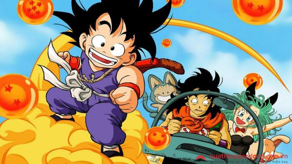

Dragon Ball chắc hẳn là truyện tranh Nhật Bản gắn liền với hầu hết tuổi thơ của chúng ta. Tôi còn nhớ thời đi học cấp 1 và cấp 2, mỗi đứa đều phải thuê cho mình ít nhất 1 cuốn để đọc rồi lại mượn thằng ngồi bên cạnh và cùng trao nhau đọc. Vậy truyện Dragon Ball - Bảy viên ngọc rồng có gì mà thu hút đến vậy?

Dragon Ball xoay quanh cuộc hành trình của cậu bé Son Goku, từ lúc bé cho đến khi trưởng thành. Những lần tầm sư học đạo, khám quá thế giới và truy tìm các viên ngọc rồng để thực hiện điều ước rồng thiêng. Xuyên suốt cuộc hành trình, cậu đã gặp được nhiều bạn bè và chống lại những kẻ hung ác có ý định dùng điều ước rồng thiêng để thống trị thế giới.
Tại Việt Nam, nhà xuất bản Kim Đồng đã xuất bản với tên nguyên gốc và có tên phụ là Bảy viên ngọc rồng.
nếu muốn xem Dragon Ball link phần dưới đây : Visit animehay.club